Compact spacing and colors are selected. This iteration refines scene editing on phones, adds useful state previews, and establishes one set of interaction rules across settings.
The same target controls adapt to the space. Mobile cards keep a clear header, a full-width brightness control, labeled power/color fields and a consistent trailing item menu. Desktop retains aligned columns. Add actions stay beside the section heading.
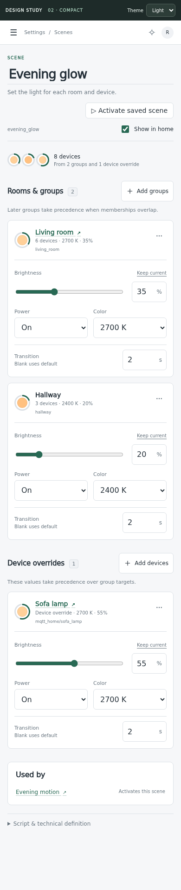
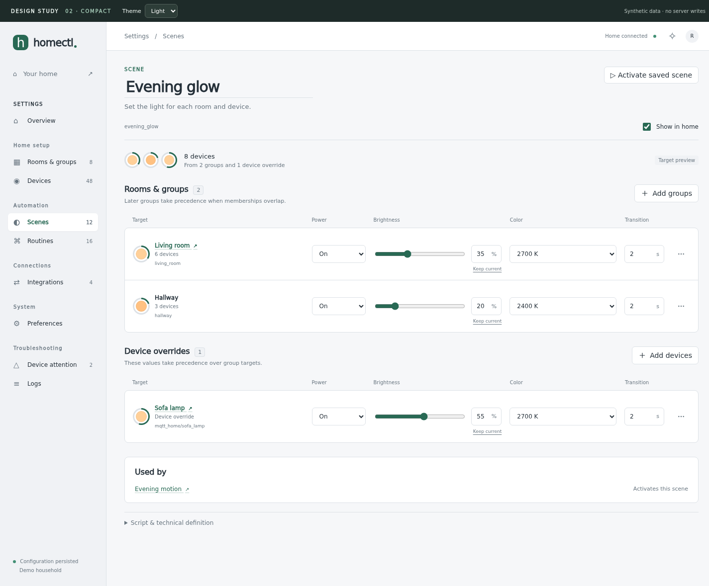
The picker selects several targets at once. Close stays at the top right, Cancel and Add selected stay in the footer. Adding or removing targets changes the page draft; Save and Discard remain in its bottom bar.
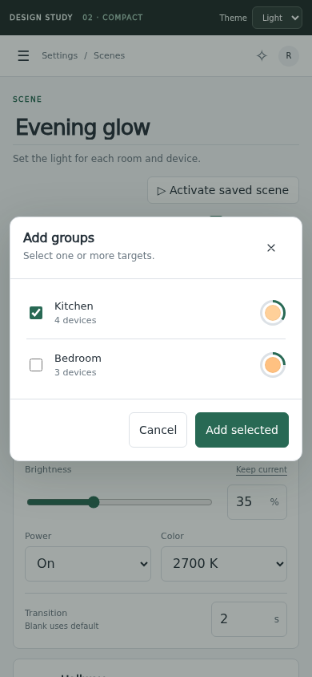
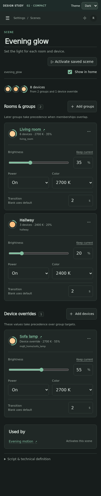
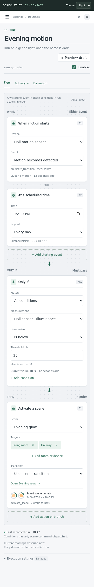
The overview names the affected devices and their reasons. The issue view explains report timing, effective policy and the next action. Defaults come from the integration, with per-device overrides or Ignore for missing-report warnings.
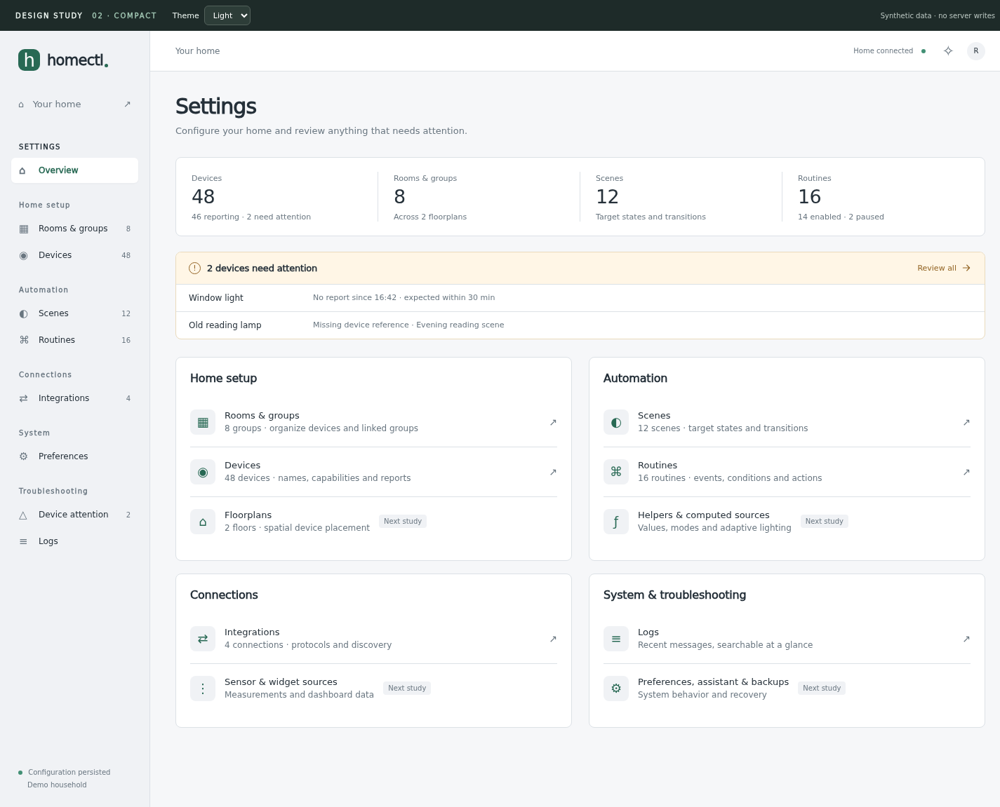
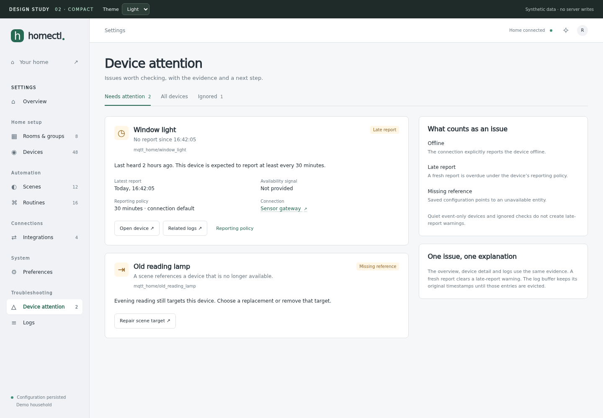
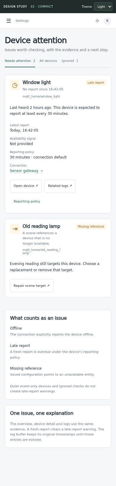
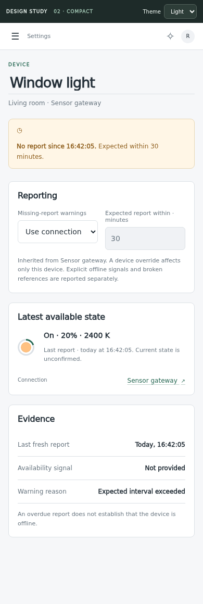
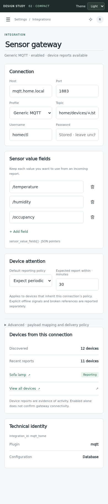
Useful technical detail stays available. One shared Show advanced details setting applies across configuration pages; error and repair context stays visible. Color dots show hue, rings show brightness, and text gives exact values. Off, unchanged, mixed and unresolved states remain distinct.
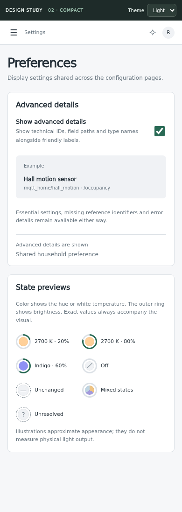
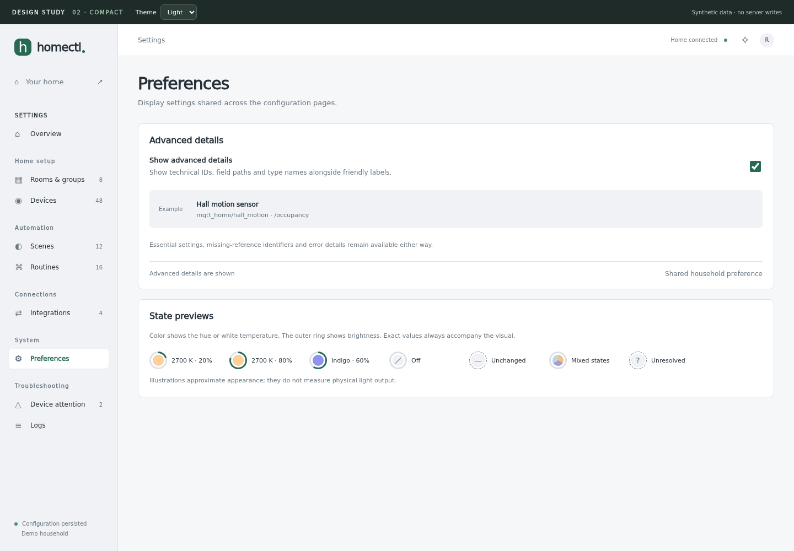
Proposed health messages explain both missing reports and recovery. These messages require server health-event work; they are illustrative here. The current server log buffer still retains only its latest 500 entries.
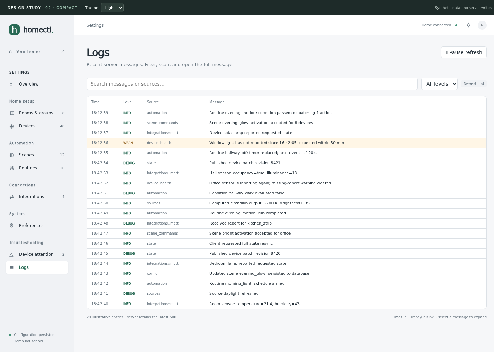
Does the new phone target card feel as clear as the routine blocks? Are the color/brightness previews useful without becoming noisy? Once those are settled, the next pass covers scene link modes and larger collections, followed by complex routines, creation and save/conflict states.
The production app is unchanged. Reporting policy persistence, health telemetry and structured log references are documented backend work, not implemented behavior.